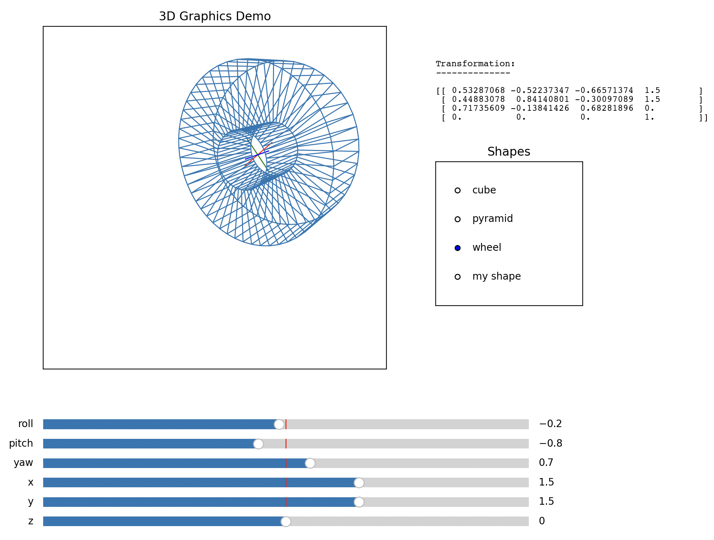

Homework 8
Table of Contents
The following assignment is due Thursday 11/07 by 11:59 PM. You should submit all your written solutions to Gradescope as a single pdf. Follow the instructions in the programming problem for code solutions.
- Your solutions must be exceptionally neat and the final answer in your solution to each problem must be abundantly clear, e.g., surrounded in a very visible box. The graders have license to dock points for illegible or unclear solutions.
- For the written part, choose the correct pages corresponding to each problem in Gradescope. Note that Gradescope registers your submission as soon as you submit it, so you don't need to rush to choose the pages. You will receive no credit if you do not choose the correct pages, no exceptions.
1. Column/Null Space
1.1. (5 points)
Determine bases for the column space and the null space of the following matrix. You may use a computer to do any row reductions, but you must otherwise show your work.
\begin{bmatrix} 0 & -2 & 2 \\ -2 & 3 & -9 \\ -1 & -2 & -1 \end{bmatrix}1.2. (5 points)
Determine bases for the column space and the null sapce of the following matrix. Write the basis for the column spaces in terms of the vectors \(\mathbf a_1, \dots, \mathbf a_8\).
\begin{align*} [ \mathbf a_1 \ \ \ \mathbf a_2 \ \ \ \mathbf a_3 \ \ \ \mathbf a_4 \ \ \ \mathbf a_5 \ \ \ \mathbf a_6 \ \ \ \mathbf a_7 \ \ \ \mathbf a_8 ] \sim \begin{bmatrix} 1 & -15 & 3 & 0 & 0 & 5 & 0 & -7 \\ 0 & 23 & 14 & 0 & 0 & 2 & 0 & 1 \\ 0 & 0 & 0 & 1 & 0 & 3 & 0 & 7 \\ 0 & 0 & 0 & 0 & 1 & 8 & 0 & 9 \\ 0 & 0 & 0 & 0 & 0 & 0 & 1 & 1 \\ 0 & 0 & 0 & 0 & 0 & 0 & 0 & 0 \\ \end{bmatrix} \end{align*}2. Graphics (Programming)
(40 points) This week you will be building an interactive matplotlib widget which can manipulate 2D renderings of 3D wireframes. Once you're done, it should like something like this.

You are given starter code in the file hw08.py. Don't change the
name of this file when you submit. Also don't change the names of
any functions included in the starter code. The only changes you
should make are to fill in the provided TODO items. You are also
given a separate file called demo.py which contains the code for the
matplotlib widget.
At a high-level the code works as follows:
- 3D wireframes are represented of 3D line segments3D, which are
represented as pairs of 3D points, which are represented as triples
of floats.
shape_to_matrixtakes a 3D wireframe with \(n\) line segments and converts it into a \(4 \times 2n\) matrix in which each column is an endpoint of a line segment in the wireframe in homogeneous coordinates. - This matrix of endpoints will be transformed by the matrix returned
by
transform_matrix, which should implement a combination of rotation and translation. See the docstring for details. Important: Note that translation should happen after rotation. - 2D line segements are represented as pairs of 2D points, which are
represented as pairs of floats. The function
matrix_to_shapeshould convert a \(4 \times 2n\) matrix into a list of \(n\) 2D line segments that will be rendered on the screen. This is done by- applying the projection matrix with viewing position
(0, 0, 10)to the given matrix - then converting each column from homogeneous coordinates to 2D Cartesian coordinates via the transformation discussed in lecture
- then finally grouping every two points to create a list of line segments.
- applying the projection matrix with viewing position
- The above three functions are combined into a single function called
full_transform. This function should:- convert the 3D shape to a matrix
- apply the transformation matrix
- convert the matrix to a 2D rendering
Once you've completed every TODO item, you should be able to run
python3 demo.py to see the widget in action.
Extra credit (5 points) For a small amount of extra credit, you can
build a wireframe (of some reasonable complexity) in
extra_credit_shape which can be viewed in the widget. In order to
get this credit, you must include in the written part of your
submission an image of your rendered wireframe, translated and
rotated a bit (like in the example image above). In particular, you
have to first complete the required parts of the assignment. You
must also give your shape a name in extra_credit_name (no credit if
you picture says "my shape"). Also please state along with your
image if you are comfortable making the image public (in case I
collect the results on a public facing website).
You will upload a single file hw08.py to Gradescope, where you can
verify that it passes some (but not all) autograder tests. Please
test your system early. There may be system dependent issues that
we'd like to address as early as possible.